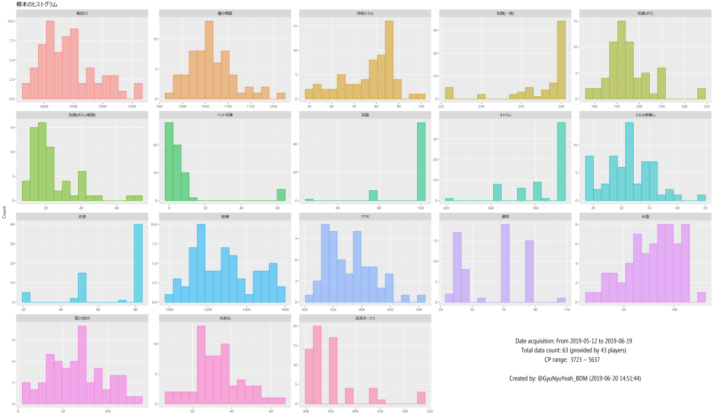

黒い砂漠モバイルでは、他の人の戦闘力の構成は非公開です。そのため、Twitter上で戦闘力細部構成のスクリーンショットをおくってもらい、頂いたスクショと収集したデータとの比較をしたプロットをお返ししています。
一番下にまとめを載せてます。見てね。
自分の伸びしろ探しから始めたことですが、活性化につながればいいなぁと思いながら続けています。
2019-06-20 牛乳家＠disaster (バレノス鯖)
Twitter @GyuNyuYeah_BDM
Discord 牛乳家#4669 (今のところ、週に3回くらいしかチェックしないです)
2つのプロットをTLないしDMでお送りします。
お送りするプロットはもっと高解像度です。
あと、いままでコメントつけてましたが、時間がかかるので省きます。ごめんなさい。

項目毎に戦闘力100区切りの平均値との比較です。
バー平均よりも下回っている場合は、そこが伸びしろ候補です。
バーの上に書いている数値は、戦闘力(あなたとの差分)です。
差分の数値をみて、どの程度伸びしろがあるのか確認してください。
そんなとこないよって人は、黒い精霊 and/or アクセ and/or 遺物突破 and/or 討伐を頑張ってください。
そこらへんの上限値がわからないので。。。

プレイヤー毎の戦闘力100区切りの平均値の散布図と回帰曲線です。
黒丸が平均値で、赤丸があなたのデータです。
複数回送って頂いている場合は、過去のデータ(戦闘力が低いデータ)ほど色が薄くしてます。
赤丸が青い線より下にあるところが伸びしろ候補です。
項目は上の図と変わりませんが、こちらのほうが視覚的にとらえることができます。 サンプルが少ないため、青い線はサンプル数とともに変化します。
自分のキャラクター情報を表示し、 <戦闘力構成を表示>"をタップ。
そうすると、戦闘力細部構成が表示されます。

スクリーンショットは、表示したまま(光原石が見切れるくらい)で大丈夫です。
成長ボーナスは他の項目から算出できますし、成長ボーナスの細部は記録していません。
追って、上記のプロットをお送りいたします。
なお、DMはフォロー外からも受け取るようにしています。
ゲーム用アカウント以外しかアカウントがなく、痕跡を残したくない場合は、メッセージ内で教えてください。
その場合、フォローをしません。
こちらからプロットを送信した後は、DMを削除していただいてもかまいませんし、不安であればブロックしていただいて構いません。
嫁さんに内緒の作業(黒さば自体も含めて)です(;ωA
対応可能な時間帯の目安は以下のとおり。
上記時間以外にお送りいただいた分は後ほど対応いたします。

| 項目 | 最小値 | 第一四分位数 | 中央値 | 平均値 | 第三四分位数 | 最大値 | 標準偏差 |
|---|---|---|---|---|---|---|---|
| 戦闘力 | 3723.00 | 4063.00 | 4338 | 4411.51 | 4657.5 | 5637 | 451.40 |
| 闇の精霊 | 975.00 | 1027.00 | 1054 | 1062.42 | 1094.0 | 1222 | 51.14 |
| 持続スキル | 50.00 | 68.00 | 80 | 76.62 | 86.0 | 100 | 11.79 |
| 知識(一般) | 226.00 | 236.00 | 240 | 237.55 | 240.0 | 240 | 4.12 |
| 知識(ボス) | 96.00 | 147.50 | 163 | 175.93 | 195.0 | 345 | 48.48 |
| 知識(ボスLv報酬) | 8.00 | 15.00 | 19 | 23.45 | 26.0 | 71 | 12.97 |
| ペット収集 | 0.00 | 0.00 | 3 | 7.10 | 6.0 | 62 | 14.74 |
| 図鑑 | 48.00 | 102.00 | 102 | 98.41 | 102.0 | 102 | 10.12 |
| キャラLv | 322.00 | 362.00 | 372 | 363.94 | 372.0 | 372 | 12.03 |
| スキル修練Lv | 44.00 | 48.00 | 51 | 51.15 | 54.0 | 64 | 4.41 |
| 衣装 | 20.00 | 53.00 | 80 | 67.63 | 80.0 | 80 | 18.64 |
| 装備 | 982.00 | 1152.25 | 1269 | 1279.98 | 1386.0 | 1564 | 158.75 |
| アクセ | 310.00 | 344.50 | 372 | 378.00 | 405.5 | 506 | 42.62 |
| 遺物 | 37.00 | 41.00 | 72 | 62.71 | 79.0 | 108 | 19.69 |
| 水晶 | 16.00 | 64.00 | 82 | 78.74 | 99.0 | 127 | 26.30 |
| 魔力刻印 | 7.75 | 43.00 | 63 | 65.60 | 85.5 | 133 | 30.66 |
| 光原石 | 10.00 | 26.00 | 32 | 33.06 | 39.0 | 67 | 11.94 |
| 成長ボーナス | 308.00 | 316.00 | 316 | 349.22 | 350.0 | 534 | 55.47 |

縦軸に項目の値、横軸に100区切りの戦闘力をとった散布図。太目の青線が平滑化曲線です。
プレイヤー毎に色分けをしています。
* プレイヤー名は伏せてます。
名前出していいよ、という方はDMください。
複数のデータがあるプレイヤーについては線で結びました。
PC推奨。スマホ、タブレットじゃ操作しづらいかもしれません。。。
あと、データ込みのプロットなのでかなり重いです。
リンク先に戻るボタンはないので、ブラウザの戻るを使ってください。
闇の精霊Lv
持続スキル
知識 一般
知識 ボス
知識 ボスLv報酬
ペット
図鑑
キャラLv
スキル修練Lv
衣装
装備
アクセ
遺物
水晶
魔力刻印
光原石
成長ボーナス